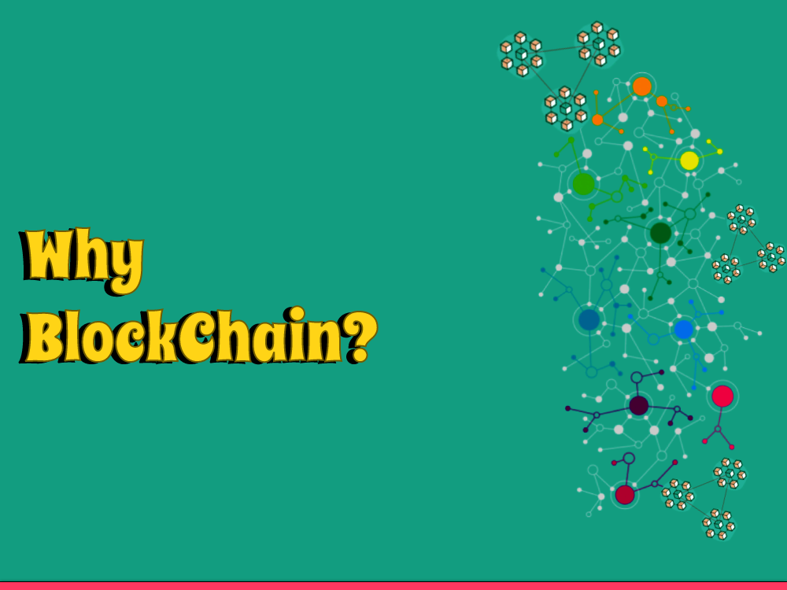

Blockchain is a computerized record that records exchanges across a decentralized organization of PCs. At the end of the day, a data set's circulated among numerous PCs as opposed to being put away in one focal area. Each block in the chain contains a record of exchanges, and when a block is added to the chain, it can't be modified.
Why Blockchain?
Blockchain is a decentralized computerized record innovation that gives a solid and straightforward approach to recording and moving information without the requirement for a focal power. Its key highlights incorporate permanence, security, and straightforwardness, making it a famous innovation for different applications.
Probably the main use instances of blockchain innovation incorporate monetary administrations, store network the board, computerized character the executives, and casting a ballot frameworks. The innovation likewise empowers the making of decentralized applications and decentralized independent associations (DAOs), which can work without the requirement for a focal power.
What Is The Blockchain And For what reason Does It Matter?
The blockchain is a circulated computerized record innovation that stores information in a decentralized way, making it secure and straightforward. The innovation utilizes cryptography to get exchanges, making it for all intents and purposes difficult to adjust or alter the information whenever it has been recorded.
The blockchain additionally empowers trustless exchanges, killing the requirement for mediators or focal specialists, which can result in quicker, less expensive, and more productive exchanges. The blockchain innovation can possibly alter different enterprises, including finance, production network the board, advanced character the executives, and that's only the tip of the iceberg.
Web3/Crypto: Why Bother?
Web3 alludes to the up and coming age of the web, which is decentralized and fueled by blockchain innovation. Web3 empowers decentralized applications (dApps) to be based on top of blockchain networks, which can work independently without the requirement for middle people or focal specialists.
Crypto, then again, alludes to advanced monetary standards that are based on blockchain innovation. Both Web3 and crypto are significant on the grounds that they give an option in contrast to the ongoing unified web and monetary frameworks, which can be slow, costly, and inclined to restriction. Web3 and crypto empower a more straightforward, secure, and decentralized approach to executing, which can help people and organizations the same.
Why is Blockchain Significant and For what reason Does it Matter?
Blockchain is significant in light of the fact that it empowers a safer, straightforward, and decentralized approach to putting away and moving information. The innovation wipes out the requirement for middle people or focal specialists, which can result in quicker, less expensive, and more productive exchanges. Blockchain innovation can possibly change different businesses, including finance, inventory network the board, advanced character the executives, and that's only the tip of the iceberg.
The innovation can likewise empower the making of decentralized independent associations (DAOs) and decentralized applications (dApps), which can work independently without the requirement for a focal power. The blockchain innovation gives a degree of trust and security that conventional frameworks can't coordinate, making it a significant innovation for the fate of money and different ventures.
Why Blockchain?
Blockchain is a decentralized computerized record innovation that gives a safe and straightforward approach to recording and moving information without the requirement for a focal power. Its key highlights incorporate unchanging nature, security, and straightforwardness, making it a famous innovation for different applications.
Probably the main use instances of blockchain innovation incorporate monetary administrations, inventory network the board, computerized personality the executives, and casting a ballot frameworks. The innovation likewise empowers the production of decentralized applications and decentralized independent associations (DAOs), which can work without the requirement for a focal power.